Computer Science 162: Operating Systems
Home
Operating System Overview
Why OS:
Every device runs an operating system. Every program ever runs on an operating system. Performance and execution behavior will depend on the operating system.
Operating Systems are becoming largely more complex. This is due to hardware becoming smarter, need for better reliability and security, need for better performance(efficient code/parallel code), and need for better energy usage.
What OS:
Operating: manages multiple tasks and users.
System: a set of interconnected components with an expected behavior observed at the interface with its environment.
Operating System(v1): an operating system is the layer of software that interfaces between(diverse) hardware resources and the (many) applications running on the machine.
Operating System(v2): an operating system implements a virtual machine for the application whose interface is more convenient than the raw hardware interface(convenint = security, reliability, portability).
Three Main Hats:
Referee: manage protection, isolation, and sharing of resources
Illusionist: provide clean, easy-to-use abstractions of physical resources
Glue: provides a set of common services
OS as referee:
Allow multiple(untrusted) applications to run concurrently.
Fault Isolation: Isolate programs from each other. Isolate OS from other programs. Concepts: process and dual mode execution
Resource Sharing: How to choose which task to run next? How to split physical resources? Concepts: scheduling
Communication: How can OS support communication to share results? Concepts: Pipes/Sockets
OS as illusionist:
Mask the restrictions inherent in computer hardware through virtualization.
All alone: provide abstraction that application has exclusive use of resources.
All powerful: provide abstraction that hardware resources are infinite.
All expressive: provide abstraction of hardware capabilities that are not physically present.
OS as glue:
Provide set of common standard services to applications to simplify and regularize their design.
Make Sharing Easier: simpler if all assume same basic primitives.
Minimize reuse: avoid re-implementing functionality from scratch. Evolve components independently.
Putting it All Together:
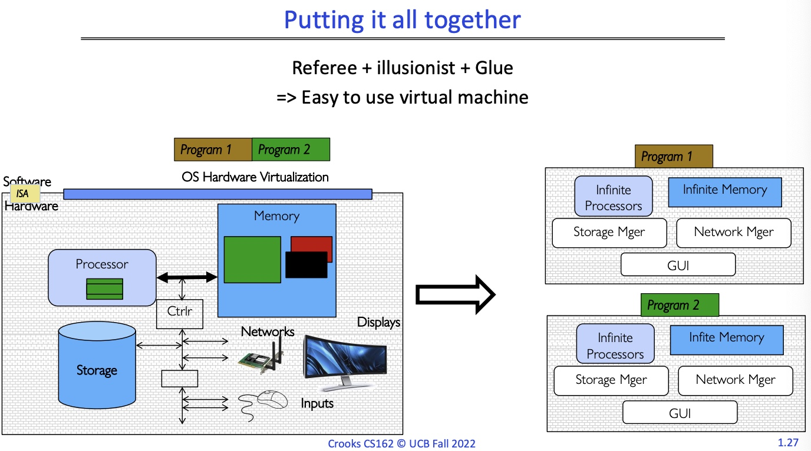
Definitions:
Overhead: added resource cost of implementing an abstraction
Fairness: How "well" are resources distributed across applications
Response Time: how long does it take for a task to complete
Throughput: rate at which group of tasks can be completed
Predictability: are performance metrics constant over time
Availability: mean time to failure + mean time to repair
Integrity: computer's operation cannot be compromised by a malicious attacker
Privacy: data stored on computer accessible to authorized users
Enforcement Policy: How the OS ensures only permitted actions are allowed
Security Policy: What is permitted
OS Evaluations Criteria:
Performance: OS must implement the abstraction efficiently, with low overhead and equitably. Related: overhead, fairness, response time, throughput, predictability
Reliability: system does what it is supposed to do-- OS failures are catastrophic. Related: availability
Security: minimize vulnerability to attack. Related: integrity, privacy, enforcement policy, security policy
Portability: a portable abstraction does not change as the hardware changes. Can't rewrite application(or OS) every time, must plan for hardware that does not exist yet.
What functions do we need an operating system to provide applications?
Process Management: Can a program create an instance of another program? Wait for it to complete? Stop or resume another running program? Send it an asynchronous event?
Input/output. How do processes communicate with devices attached to the computer and through them to the physical world? Can processes communicate with each other?
Thread management. Can we create multiple activities or threads that share memory or other resources within a process? Can we stop and start threads? How do we synchronize their use of shared data structures?
Memory management. Can a process ask for more (or less) memory space? Can it share the same physical memory region with other processes?
File systems and storage. How does a process store the user’s data persistently so that it can survive machine crashes and disk failures? How does the user name and organize their data?
Networking and distributed systems. How do processes communicate with processes on other computers? How do processes on different computers coordinate their actions despite machine crashes and network problems?
Graphics and window management. How does a process control pixels on its portion of the screen? How does a process make use of graphics accelerators?
Authentication and security. What permissions does a user or a program have, and how are these permissions kept up to date? On what basis do we know the user (or program) is who they say they are?
Protection: Processes and Kernels
The OS system implements a virtual machine for the application whose interface is more convenient than the raw hardware interface. Convenient = security, reliability, portability.
Mechanisms vs Policy:
Mechanism: Lowe-level methods or protocols that implement a needed piece of functionality.(e.g. A brake pedal)
Policy: Algorithms for making decisions wihtin the OS. Use the mechanism. (e.g. "I break when I see a stop sign")
Requirements for Virtualization:
Protection is necessary to preserve the virtualization abstraction. Protect application from other application's code. Protect OS from the application. Protect applications against inequitable resource utilisation.
What is a process?:
A process is an instance of a running program. Which has access to:
CPU, Memory(store code, data, stack, heap), registers(PC, SP, regular registers), IO information(open files, etc).
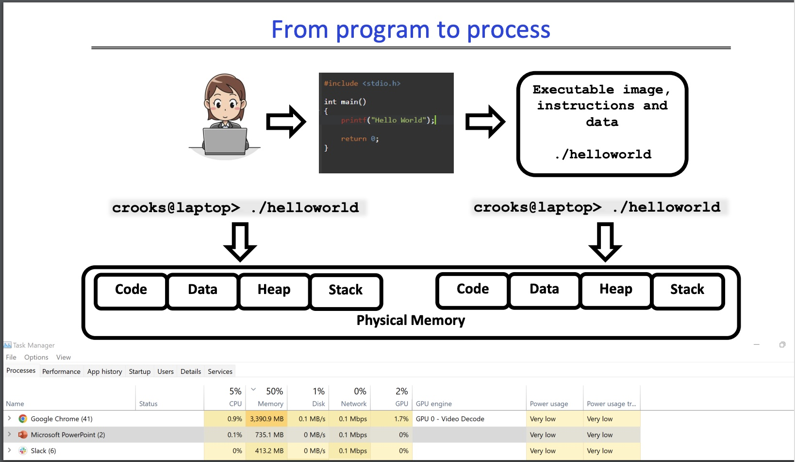
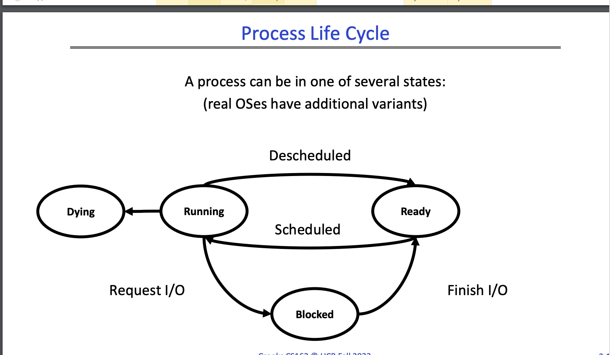
When a process is in the running state it is in the CPU. Blocked and Ready processes are distinguished so that processes waiting on IO aren't rescheduled.
Process Management:
Process Control Block: in OS stores necessary metadata-- pc, stack ptr, registers, PID, UID, list of open files, process state, etc.
Process List: stores all processes. Run Queues: List all PCBs in Ready state. Wait Queues: lists all PCBs in blocked state
OS Kernel:
Lowest level of OS running on system. Kernel is trusted with full access to all hardware capabilities. All other software(OS or applications) is considered untrusted.
The Kernel has full access to keep it simple and small is security. This is the principle of lowest access, keep entities with as little access as possible.
Process Refined: an executing program with restricted rights. Processes are boxed in with the OS and Hardware and the kernel is the door. Enforcing mechanism must not hinder functionality or hurt performance.
User Mode vs Kernel Mode:
Application/User Code(untrusted): run all the processor with all potentially dangerous operations disabled.
Kernel Code(trusted): runs directly on processor with unlimited rights. Performs any hardware operations.
How can the kernel enforce restricted rights?:
Attempt 1: Simulation

Attempt 2: Dual Mode Operation
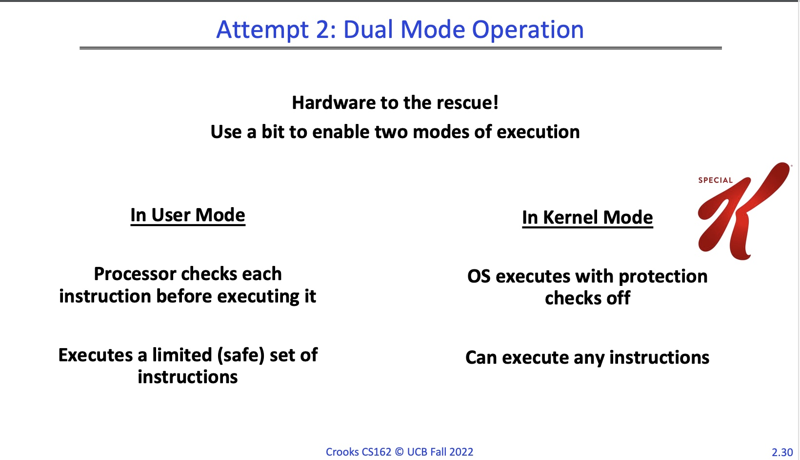
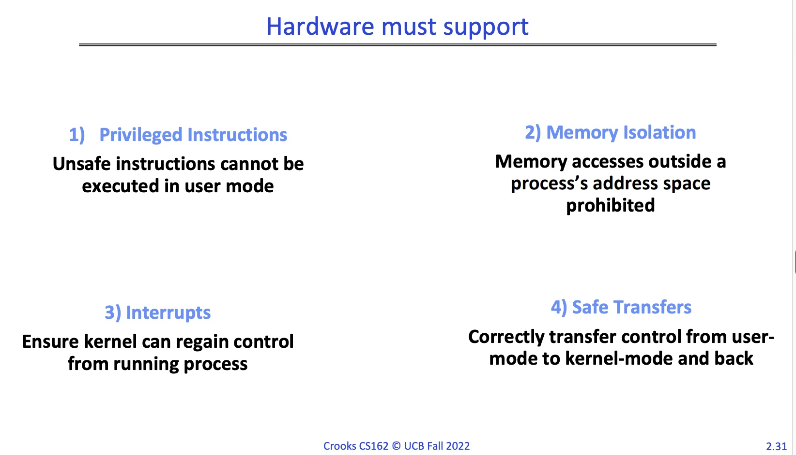
Privileged Instructions: Unsafe instructions cannot be executed in user mode.
cannot change privilege level, cannot change address space, cannot disable interrupts, cannot perform IO operations, cannot halt the processor. So what can an application due? Asks for permission to access kernel mode. System calls Transition from user to kernel mode only at specific locations specified by the OS. Exceptsions User mode attempts to execute a privileged exception. Generates a processor exception which passes control to kernel at specific locations.
Memory Isolation: Memory accesses outside a process's address space is prohibited.
Attempt 1: Isolation
Hardware to the rescue-- base and bound registers. If memory reference was in between the base and bound reference it was 'ok' otherwise an exception is thrown. Limitations: static memory allocation, cannot share memory between processes, location of code & data determined at runtime, cannot relocate/move programs leads to fragmentation.
Attempt 2: Virtualization
Virtual Address space-- set of memory address that process can "touch". Physical address space-- set of memory addresses supported by hardware. Map from virtual addresses to physical address through address translation. Benefits: whole space of virtual address space even physical address not resident in memory, same virtual address can map to same physical address, every process's memory always starts at 0, can dynamically change mapping of virtual to physical addresses.
Interrupts: Ensure kernel can regain control from running process
Hardware to the rescue. Set to interrupt processor after a specified delay or specified event and transfer control to (specific locations) in Kernel. Resetting timer is a privilege operation.
Safe Transfers: Correctly transfer control from user-mode to kernel-mode and back.
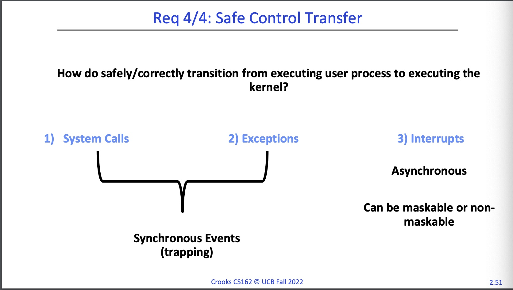
System Calls: User program requests OS service. Transfers to kernel at well-defined location. Read input/write to screen, to files, create new processes, send network packets, get time, etc.
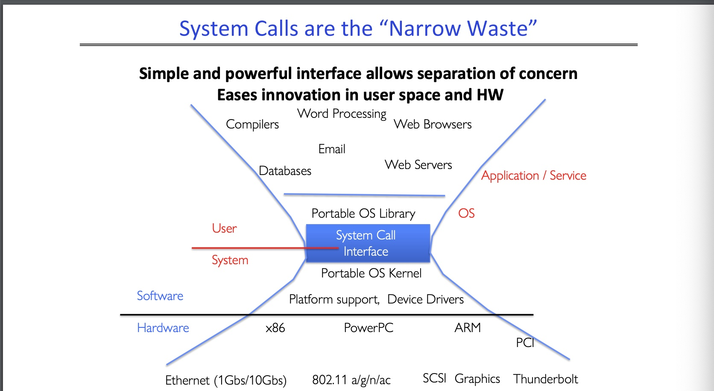
Exceptions: Any unexpected condition caused by user program behavior. Stop executing process and enter kernel at specific exception handler. E.G. process missteps(division by zero, writing read-only memory) Attempts to execute a privileged instruction in user mode. Debugger breakpoints! Exceptions are handled the same as interrupts.
Interrupts: Asynchronous signal to the processor that some external event has occurred and may require attention. When process interrupt, stop current process and enter kernel at designated interrupt handler. E.G. timer interrupts, IO interrupts, interprocessor interrupts.
Kernel->User:
New Process Creation: Kernel instantiates data structures, sets registers, switches to user mode.
Resume after an exception/interrupt/syscall: resume execution by restoring PC, registers, and unsetting mode.
Switching to a different process: save old process state. Load new process state(restore PC, registers). Unset mode.
User->Kernel:
Key Requirements: malicious user program(or IO device) cannot corrupt the kernel. Interrupts, exceptions or system calls handled similarly => fewer code paths, fewer bugs.
Limited Entry: cannot jump to arbitrary code in kernel.
Atomic Switch: switch from process stack to kernel stack.
Transparent Execution: restore prior state to continue program.
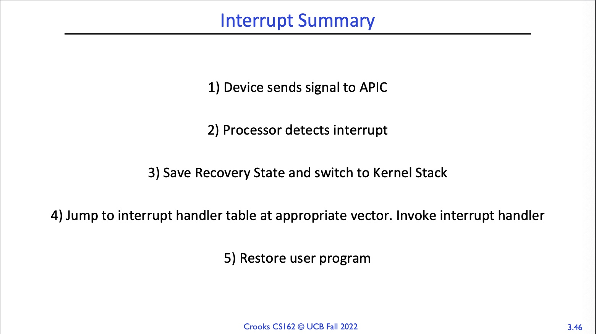
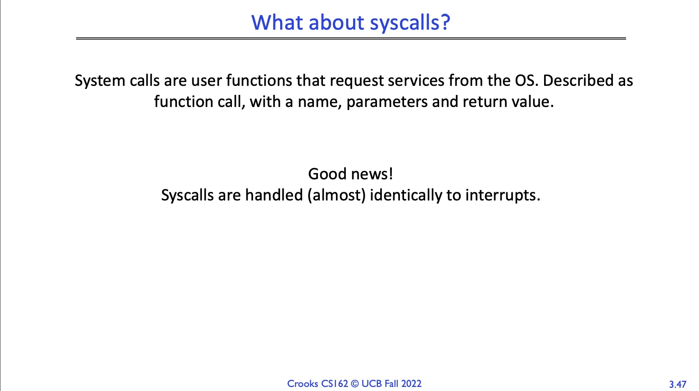
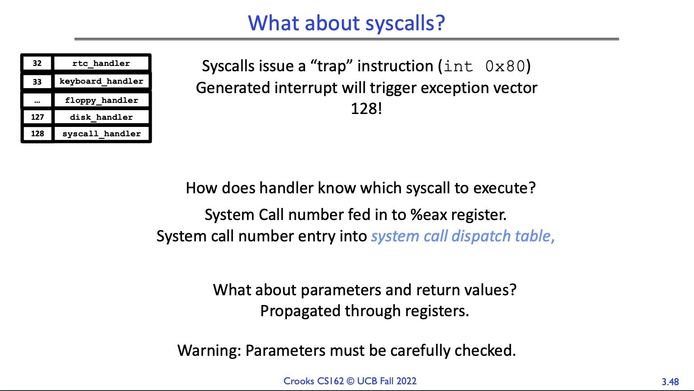
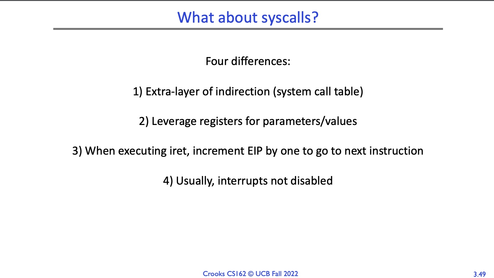
Abstractions: Files, I/O, IPC, Pipes and Sockets
The Programming Interface:
In this section the focus is on process management and input/output.
Process Management:
A shell: a job control system; both Windows and UNIX have a shell. An early innovation for user-level process management was to allow developers to write their won shell command line interpreters. Many tasks involve a sequence of steps to do something, each of which can be its own program. With a shell, you can write down the sequence of steps, as a sequence of programs to run to do each step. Thus, you can view it as a very early version of a scripting system.
Windows Process Management:
One approach to process management is to just add a system call to create a process and other system calls for other process process operations. This turns out to be simple in theory and complex in practice. In Windows, there is a routine called, CreateProcess():
1. Create and initialize the process control block(PCB) in the kernel.
2. Create and initialize a new address space.
3. Load the program prog into the address space.
4. Copy arguments args into memory in the address space.
4. Initialize the hardware context to start execution at "start".
5. Inform the scheduler that the new process is ready to run.
Unfortunately, there are quite a few aspects of the process that the parent might like to control, such as: its privileges, where it sends its input and output, what is should store its files, what to use as a scheduling priority, and so forth. We cannot trust the child process to set its own privileges.
UNIX Process Management:
UNIX takes a different approach to process management, one that is complex in theory and simple in practice. UNIX splits CreateProcess in two steps, called fork and exec. UNIX fork creates a complete copy of the parent process, with one key exception. The child process sets up privileges, priorities and I/O for the program that is about to be started, e.g., by closing some files, opening others, reducing priority if it is to run in the background, etc. Because the chile runs exactly the same cod as the parent it can be trusted to set up the context for the new program correctly. Once the context is set, the child process calls UNIX exec. UNIX exec brings the new executable image into memory and starts it running. It may seem wasteful to make a complete copy of the parent process, just to overwrite that copy when we bring in the new executable image into memory using exec, it turns out that fork and exec can be implemented efficiently(discussed later) With this design, UNIX fork takes no arguments and returns an integer. UNIX exec takes two arguments(the program to be run and an array of arguments to pass to the program). This is in place of the ten parameters needed for CreateProcess.
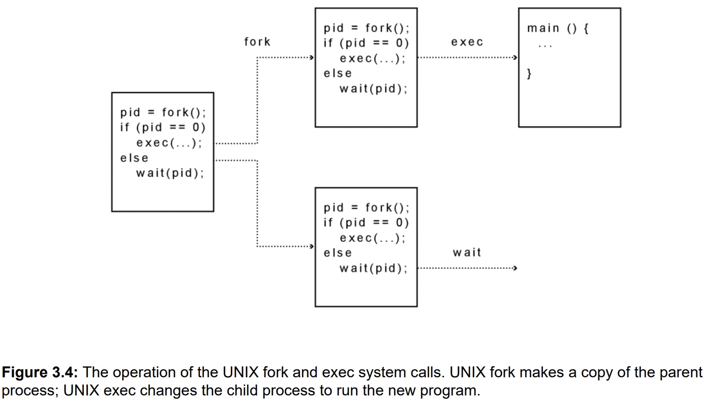
UNIX fork:
1. Create and initialize the process control block(PCB) in the kernel.
2. Create a new address space.
3. Initialize the address space.
4. Initialize the address space with a copy of the entire contents of the address space of the parent.
5. Inherit the execution context of the parent(e.g., any open files)
6. Inform the scheduler that the new process is ready to run.
A strange aspect of UNIX fork is that the system call returns twice: once to the parent and once to the child. To the parent, UNIX returns the process ID of the child; to the child, it returns zero indicating success. Just as if you made a clone of yourself, you would need some way to tell who was the clone and who was the original, UNIX uses the return value from the fork to distinguish the two copies.
UNIX exec:
1. Load the program prog into the current address space.
2. Copy arguments args into memory in the address space.
3. Initialize the hardware context to start execution at "start".
Note: exec does not create a new process. Often the parent process needs to pause until the child process completes, e.g., if the next step depends on the output of the previous step. UNIX has a system call, naturally enough called wait, that pauses the parent until the child finishes, crashes, or is terminated. Since the parent could have created many child processes, wait it parametrized with the process ID of the child.
Input/Output:
One of the primary innovations in UNIX was to regularize all device input and output behind a single common interface. In fact, UNIX took this one giant step further: it uses this same interface for reading and writing files and for interprocess communication. THis approach was so successful that it is almost universally followed in systems today.
The basic ideas in UNIX I/O interface are:
Uniformity: All device I/O, file operations, and interprocess communication use the same set of system calls: open, close, read and write.
Open before use: Before an application does I/O it must first call open on the device, file, or communication channel. This gives the operating system a chance to check access permissions and to set up any internal bookkeeping. Some deices, such as a printer, only allow one application access at a time -- the open call can return an error if the device is in use. Open returns a handle to be used in later calls to read, write and close to identify the file, device, or channel; this handle is somewhat misleadingly called a file descriptor even when it refers to a device or channel so there is no file involved. For convenience, the UNIX shell starts application with open file descriptor for reading and writing to the terminal.
Byte-oriented: All devices, even those that transfer fixed-size blocks of data, are accessed with byte arrays. SImilarly, file and communication channel access is in terms of bytes, even though we store data structures in files and send data structures across channels.
Kernel-buffered reads: Stream data, such as from the network or keyboard, is stored in a kerne; buffer and returned to the application on request. This allows the UNIX system call read interface to be the same for devices with streaming reads as those with block reads. In both cases, if no data is available to be returned immediately, the red call blocks until it arrives, potentially giving up the processor to some other task with work to do.
Kernel-buffered writes: Likewise, outgoing data is stored in a kerne; buffer for transmission when the device becomes available. In the normal case, the system call write copies the data into the kernel buffer and returns immediately. This decouples the application from the device, allowing each to go at its own speed. If the application generates data faster than the device can receive it, the write system call blocks in the kernel until there is enough room to store the new data in the buffer.
Explicit close: When an application is done with the device or file it calls close. This signals to the operating system that is can decrement the reference-count on the device and garbage collect any unused kernel data structures.
Pipes: A UNIX pipe is a kernel buffer with two file descriptors, one for writing(to put data into the pipe) and one for reading(to pull data out of the pope). Data is read in exactly the same sequence it is written, but since the data is buffered, the execution of the producer and consumer can be decoupled, reducing waiting in the common case. The pip terminates when either endpoint closes the pipe or exits. Note: the internet has a similar facility to UNIX pipes called TCP(Transmission Control Protocol). Where UNIX pipes connect processes on the same machine, TCP provides a bi-directional pip between two processes running on different machines. In TCP, data is written as a sequence of bytes on one machine and rea out as the same sequence on the other machine.
Replace File Descriptor: By manipulating the file descriptors of the child process, the shell can cause the child to read its input from or send its output to, a file or pipe instead of from a keyboard or to the screen. This way the child process does not need to be aware of who is providing or consuming its I/O. The shell does this redirection using a special system call named dup2(from, to) that replaces the to file descriptor with a copy of the from file descriptor.
Wait for Multiple Reads: for client-server computing, a server may have a pip open to multiple client processes. Normally, read will block if there is no data to be read, and it would be inefficient for the server to poll each pipe in turn to check if there is work for it to do. The UNIX system call select(fd[], number) addresses this. Select allows the server to wait for input from any set of file descriptors; it returns the descriptor that has data, but it does not read the data. Windows has an equivalent function, called WaitForMultipleObjects.
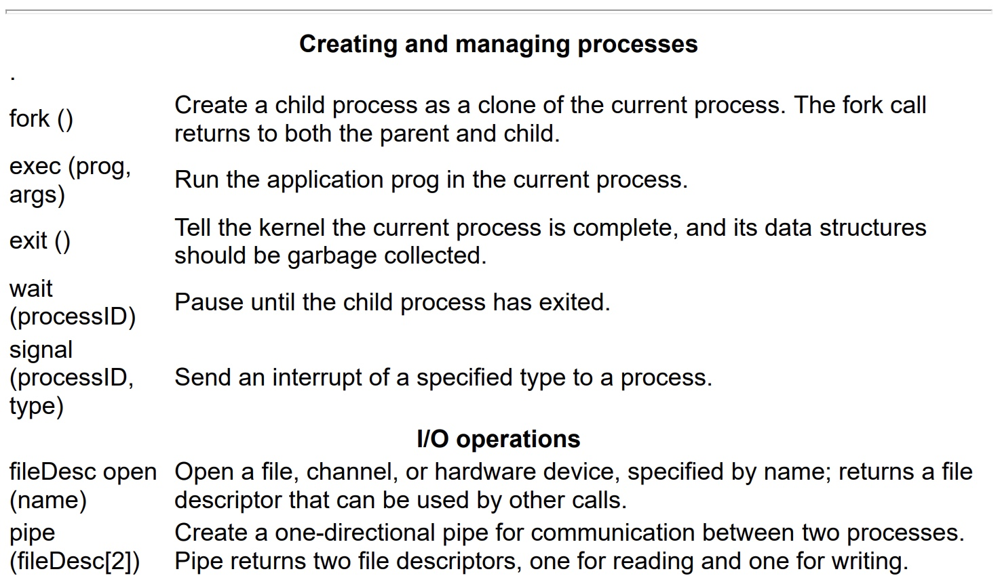
Implementing a Shell:
The UNIX system calls above are enough to build a flexible and powerful command line shell, one that runs entirely at user-level with no special permissions. The process that creates the shell is responsible for providing it an open file descriptor for reading commands for its input called stdin and for writing output called stdout.
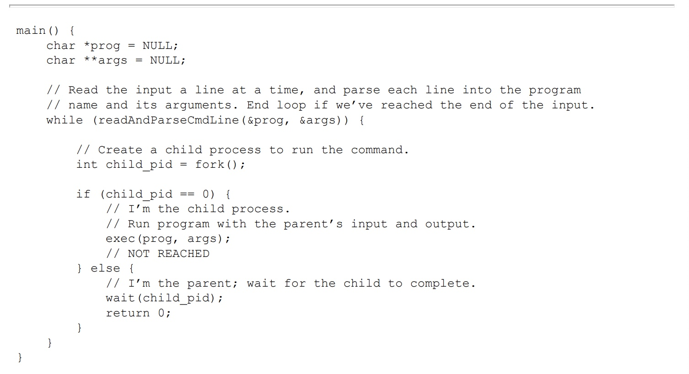
Note: because the commands to read and write to an open file descriptor are the same whether the file descriptor represents a keyboard, screen, file, device, or pipe, UNIX programs do not need to be aware of where their input is coming from, or where their output is going. This is helpful in a number of ways:
A program can be a file of commands. Programs are normally a set of machine instructions but on UNIX a program can be a file containing a list of commands for a shell to interpret. To disambiguate shell programs signified in UNIX by putting "#! interpreter" as the first line of the file, where "interpreter" is teh same of the shell executable.
A program can send its output to a file: By changing the stdout file descriptor in the child, the shell can redirect the child's output to a file. In the standard UNIX shell, this is signified with a "greater than" symbol. Thus, "ls > tmp" lists the contents of the current directory into the file "tmp". After the fork and before the exec, the shell can replace the stdout file descriptor for the child using dup2. Because the paretn has been cloned, changing hte stdout for the child has no effect on the parent.
A program can read its input from a file. Likewise by using dup2 to change the stdin file descriptor, the shell can cause the child to read its input from a file. In the standard UNIX shell, this is signified with a "less than" symbol. Thus, "zork < solution" plays the game "zork" with a list of instructions stored in the file "solution".
The output of one program can be the input to another program. The shell can use pipe to connect two programs together, so that the output of one is the input of another. This is called a producer-consumer relationship. In the standard UNIX shell, a pipe connecting two programs is signified by a "|" symbol, as in: "cpp file.c | cparse |cgen | as > file.o". In this case the shell creates four separate child processes, each connected by pipes to its predecessor and successor. Each of the phases can run in parallel, with the parent waiting for all of them to finish.
Interprocess Communication:
For many of the same reasons it makes sense to construct complex applications from simpler modules, it often makes sense to create applications that can specialize on specific task, and then combine those applications into more complex structures.
Producer-Consumer. In this model, programs are structured to accept as input the output of other programs. Communication is one-way: the producer only writes, and the consumer only reads. As we explained above, this allows chaining: a consumer can be, in turn, a producer for a different process. Much of the success of UNIX was due to its ability to easily compose many different programs together in this fashion.
Client-server. An alternative model is to allow two-way communication between processes, as in client-server computing. The server implements some specialized task, such as managing the printer queue or managing the display. Clients send request to the server to do some task, and when operation is complete, there server replies back to the client.
File System. Another way programs can be connected together is through reading and writing files. A text editor can import an image created by a drawing program, and the editor can in turn write an HTML file that a web server can read to know how to display a web page. A key distinction is that, unlike the first two modes, communication through the file system can be separated in time: the writer of the file does not need to be running at the same time as the file reader. Therefore, data needs to be stored persistently on disk or other stable storage, and the data needs to be named so that you can find the files when needed later on.
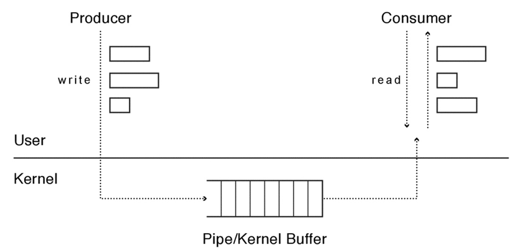
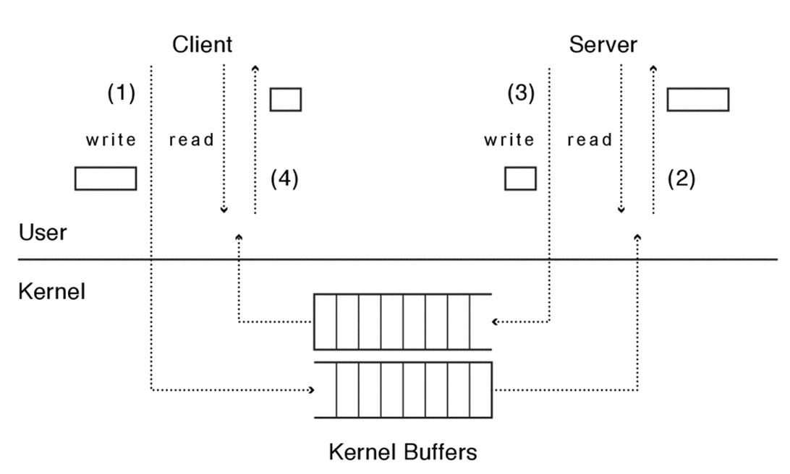
Operating System Structure:
There are many dependencies among the modules inside the operating system, and there is often quite frequent interaction between these modules. This has led operating system designers to wrestle with a fundamental tradeoff: by centralizing functionality in the kernel, performance is improved and it makes it easier to arrange tight integration between kernel modules. However, the resulting systems are less flexible, less easy to change and less adaptive to user or application needs.
Monolithic Kernels:
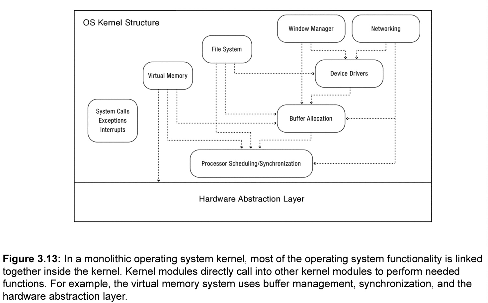
Almost all widely used commercial OS systems use monolithic kernel design, e.g. Windows, MacOS and Linux. In a monolithic kernel design most of the OS functionality runs inside the OS kernel. In truth, the term is a bit of misnomer, because even in so-called monolithic systems, there are often large segments of what users consider the OS that runs outside the kernel, either as utilities like the shell, or in system libraries such as libraries to manage the user interface. Internal to the monolithic kernel, the OS designer is free to develop whatever interfaces between modules that make sense, and so there is quite a bit of variation from OS to OS in those internal structures. However, two common themes emerge across systems: to improve portability, almost all modern operating systems have both a hardware abstraction layer and dynamically loaded device drivers.
Microkernel:
An alternative to the monolithic kernel approach is to run as much of the operating system as possible in one or more user-level servers. The windows manager on most operating systems works this way: individual applications draw items on their portion of the screen by sending request to the window manager. The window manager adjudicates which application window is in front or in back for each pixel on the screen, then renders the result. If the system has a hardware graphics accelerator present, the window manager can use it to render items more quickly. Some systems have moved other parts other parts of the operating system into user-level servers: the network stack, the file system, device drivers, and so forth. The difference between a monolithic and microkernel design is often transparent to the application programmer. The location of the service can be hidden in a user-level library -- calls go to the library, which casts the requests either as system calls or as reads and writes to the server through a pipe. The location of the server can also be hidden inside the kernel -- the application calls the kernel as if the kernel implements the service but instead the kernel reformats the request into a pipe that the server can read. A microkernel design offers considerable benefit to the operating system developer, as its easier to modularize and debug user-level services than kernel code. Aside from a potential reliability improvement, however, microkernels offer little in the way of visible benefit to end users and can slow down overall performance by inserting extra steps between the application and service it needs. Thus in practice most systems adopt a hybrid model where some operating system services are run at user-level and some are in the kernel depending on the specific tradeoff between code complexity and performance.
Hardware Abstraction Layer:
A key goal of operating systems is to be portable across a wide variety of hardware platforms. To accomplish this especially within a monolithic system, requires careful design of the hardware abstraction layer. The hardware abstraction layer(HAL) is a portable interface to machine configuration and processor-specific operations within the kernel. For example, within the same processor family, such as an Intel x86, different computer manufacturers will require different machine-specific code to configure and mange interrupts and hardware timers. Operating systems that are portable across processor families say between an ARM and an x86 or between a 32bit and 64bit x86 will need processor specific code for process and thread context switches. The interrupt, processor exception, and system call trap handling is also processor specific; all systems have those functions, but the specific implementation will vary. With a will defined hardware abstraction layer in place, most of the operating system is machine and processor independent. Thus porting an operating system to a now computer is just a matter of creating new implementations of these low-level HAL routines and re-linking.
Dynamically Installed Device Drivers:
A similar consideration leads to operating systems that can easily accommodate a wide variety of physical I/O devices. Although there are only a handful of different instruction set architectures in wide use today, there are a huge number of different types of physical I/O devices, manufactured by a large number of companies. The key innovation widely adopted today is a dynamically loadable device driver. A dynamically loadable device driver is software to manage a specific device, interface, or chipset, added to the operating system kernel after the kernel starts running, to handle the devices that are present on a particular machine. The device manufacturer typically provides the driver code, using a standard interface supported by the kernel. The operating system kernel calls into the driver whenever it needs to read or write data to the device. The operating system boots with a small number of device drivers e.g. for the disk. For the devices physically attached to the computer, the computer manufacturer bundles those drivers into a file it stores along with the bootloader. When the OS starts up, it queries the I/O bus for which devices are attached to the computer and then loads thos drivers form the file on disk. Finally, for any network attached devices, such as a printer, the OS can load those drivers over the Internet. While dynamically loadable device drivers solve one problem, they pose a different one. Errors in a device driver can corrupt the OS kernel and application data structures; just as with a regular program, error may not be caught immediately, so that user may be unaware that their data is being silently modified. Even worse, a malicious attacker can use device drivers to introduce a computer virus into the operating system kernel and thereby silently gain control over the entire computer. Operating system developers have taken five approaches to dealing with this issue:
Code Inspection: operating system vendors typically require all device driver code to be submitted in advance for inspection and testing, before being allowed into the kernel.
Bug Tracking: after every system crash, the operating system can collect information about the system configuration adn current kernel stack, and sends this information back to a central database for analysis.
User-level Device Driver. Both Apple and Microsoft strongly encourage new device drivers to run at user-level rather than in kernel. Each device driver runs in a separate user-level process, using system calls to manipulate the physical device. This way, a buggy device driver can only affect its own internal data structures and not the rest of the OS kernel; if the device driver crashes the kernel can restart easily.
Virtual Machine Device Drivers. To handle legacy device drivers one approach that has gained some traction is to run device driver code inside a guest os running on a virtual machine. The guest so loads the device drivers as if it was running directly on the real hardware, but when the devices attempt to access the physical hardware, the underlying virtual machine monitor regains control to ensure safety. Device drivers can still have bugs, but they can only corrupt the guest os and not other applications running on the underlying virtual machine monitor.
Driver Sandboxing. A further challenge for both user-level drivers and virtual machine drivers is performance. Some device drivers need frequent interaction with hardware and the rest of the kernel. Some researchers have proposed running device drivers in their own restricted execution environment inside the kerne. This requires light weight sandboxing techniques discussed later.
Abstractions Summary:
System calls can be used by application to create and manage processes, perform I/O, and communicate with other processes. Every operating system has its own unique system call interface. We focused on parts of the UNIX interface because it is both compact and powerful. A key aspect of the UNIX interface are that creating a process(with fork) is separate from starting to run a program in that process(with exec); another key feature is the use of kernel buffers to decouple reading and writing data through the kernel. Operating systems use the system call interface to provide services to applications and to aid in the internal structuring of the operating system itself. Almost all general purpose computer systems today have a user-level shell and/or window manager that can start and manage applications on behalf of the user. Many systems also implement parts of the operating system as user-level services accessed through kernel pipes.
Future:
A trend is for applications to become mini-operating systems in their own right, with multiple users, resource sharing and allocation, untrusted third-party code, processor and memory management and so forth. The system call interfaces for Windows and UNIX were not designed with this in mind and an interesting question is how they will change to accommodate this future of powerful meta-applications. Traditionally operating systems make resource allocation decisions -- when to schedule a process or a thread, how much memory to give a particular application, where and when to store its disk blocks, when to send its network packets -- transparently to the application, with a goal of improving user and overall sytem performance. APplication are unaware of how many resources they have, appearing to run by themselves, isolated on their own (virtual) machine. Of course, the reality is often quite different. An alternative model is for operating systems to divide resources among applications and then allow each application to decide for itself how best to use those resources. One can think of this as a type of federalism. If both the operating system and applications are governments doing their own resource allocation, they are likely to get in each other's way if they are not careful.
Concurrency and Threads
Concurrency: multiple activities happening at the same time. Correctly managing concurrency is a key challenge for operating system developers. The key idea is to write a concurrent program -- one with many simultaneous activities -- as a set of sequential streams of execution, or thread, that interact and share results in very precise ways. Threads let us define a set of tasks that run concurrently while the code for each task is sequential. The thread abstraction lets the programmer create as many threads as needed without worrying about the exact number of physical processors, or exactly which processor is doing what at each instant. Of course, threads are only an abstraction: the physical hardware has a limited number of processors(potentially only one). The operating system's job is to provide the illusion of a nearly infinite number of virtual processors even while the physical hardware is more limited. It sustains the illusion by transparently suspending and resuming threads so that at any given time only a subset of the threads are actively running.
Thread Use Cases:
The intuition behind the thread abstraction is simple: in a program, we can represent each concurrent task as a thread. Each thread proceeds the abstraction of sequential execution similar to the traditional programming model. In fact, think of a traditional program as single-threaded with one logical sequence of steps as each instruction follows the previous one. A multi-threaded program is a generalization of the same basic programming model. Each individual thread follows a single sequence of steps as it executes statements, iterates through loops, calls/returns from procedures, etc. However, a program can now have several such threads executing at the same time.
Four Reasons to Use Threads:
Program Structure: expressing logically concurrent tasks. Programs often interact with or simulate real-world applications that have concurrent activities. Threads let you express an applications natural concurrency by writing each concurrent task as a separate thread.
Responsiveness: shifting work to run in the background. To improve user responsiveness and performance a common design pattern is to create threads to perform work in the background, without the user waiting for the result. This way, the user interface can remain responsive to further commands, regardless of the complexity of the user request. In web browser for example, the cancel button should continue to work even(or especially) if the downloaded page is gigantic or a script on the page takes a long time to execute. Operating system kernels make extensive use of threads to preserve responsiveness. Many operating systems are designed so that the common case is fast. For example, when writing a file the operating system stores the modified data in a kernel buffer, and returns immediately to the application. In the background, the operating system kernel runs a separate thread to flush the modified data out to disk.
Performance: exploiting multiple processors. Programs can use threads on a multiprocessor to do work in parallel; they can do the same work in less time or more work in the same elapsed time. Today, a server might have more than a dozen processors; a desktop or laptop may include eight processor cores.
Performance: managing I/O devices. To do useful work, computers must interact with the outside world via I/O devices. By running tasks as separate threads, when one task is waiting for I/O, the processor can make progress on a different task. The benefit of concurrency between the processor and I/O is two-fold: first processors are often much faster than the I/O systems with which they interact, so keeping the processor idle during I/O would waste much of its capacity. Second, I/O provides a way for the computer to interact with external entities, such as users pressing keys on a keyboard or a remote computer sending network packets. The arrival of this type of I/O event is unpredictable, so the processor must be able to work on other tasks while still responding quickly to these external events.
Thread Abstraction:
Thread: a single execution sequence that represents a separately schedulable task.
Single Execution Sequence: each thread executes a sequence of instructions -- assignments, conditionals, loops, procedures, and so on -- just as in the familiar sequential programming model.
Separately Schedulable Task: the operating system can run, suspend, or resume a thread at any time.
Running, Suspending, and Resuming Threads:
To map an arbitrary set of threads to a fixed set of processors, operating systems include a thread scheduler that can switch between threads that are running and those that are ready but not running. Threads thus provide an execution model in which each thread runs on a dedicated virtual processor with unpredictable and variable speed. From the point of view of a thread's code, each instruction appears to execute immediately after the preceding one.
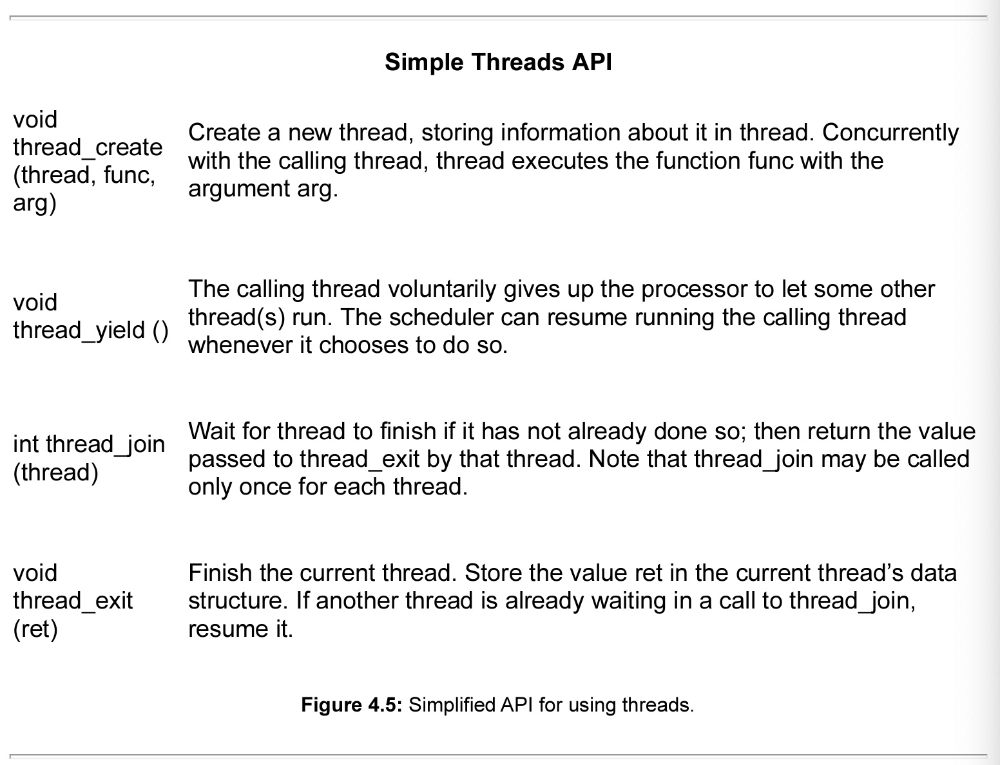
A good way to understand the simple threads API is that it provides a way to invoke an asynchronous procedure call. A normal procedure call passes a set of arguments to a function, runs the function immediately on the caller’s stack, and when the function is completed, returns control back to the caller with the result. An asynchronous procedure call separates the call from the return: with thread_create, the caller starts the function, but unlike a normal procedure call, the caller continues execution concurrently with the called function. Later, the caller can wait for the function completion (with thread_join).
Although the interface in Figure 4.5 is simple, it is remarkably powerful. Many multithreaded applications can be designed using only these thread operations and no additional synchronization. With fork-join parallelism, a thread can create child threads to perform work (“fork”, or thread_create), and it can wait for their results (“join”). Data may be safely shared between threads, provided it is (a) written by the parent before the child thread starts or (b) written by the child and read by the parent after the join.
f
As we have seen, each thread represents a sequential stream of execution. The operating system provides the illusion that each thread runs on its own virtual processor by transparently suspending and resuming threads. For the illusion to work, the operating system must precisely save and restore the state of a thread. However, because threads run either in a process or in the kernel, there is also shared state that is not saved or restored when switching the processor between threads. Thus, to understand how the operating system implements the thread abstraction, we must define both the per-thread state and the state that is shared among threads. Then we can describe a thread’s life cycle — how the operating system can create, start, stop, and delete threads to provide the abstraction.
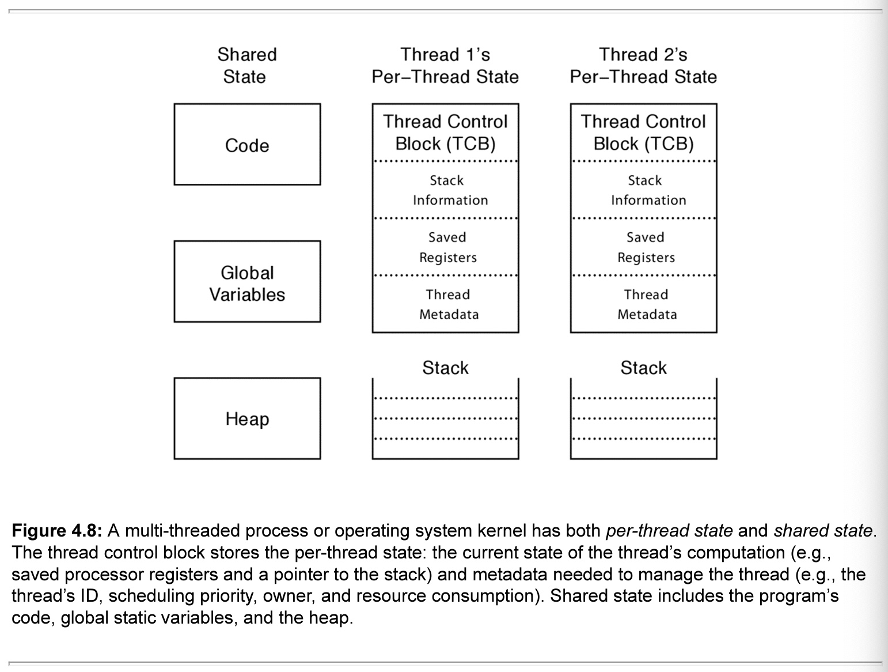
The operating system needs a data structure to represent a thread’s state; a thread is like any other object in this regard. This data structure is called the thread control block (TCB). For every thread the operating system creates, it creates one TCB. The TCB holds two types of per-thread information: the state of the computation being performed by the thread, and the metadata about the thread that is used to manage the thread.
Per-thread Computation State. To create multiple threads and to be able to start and stop each thread as needed, the operating system must allocate space in the TCB for the current state of each thread’s computation: a pointer to the thread’s stack and a copy of its processor registers.
Per-thread Metadata. The TCB also includes per-thread metadata — information for managing the thread. For example, each thread might have a thread ID, scheduling priority, and status (e.g., whether the thread is waiting for an event or is ready to be placed onto a processor).
As opposed to per-thread state that is allocated for each thread, some state is shared between threads running in the same process or within the operating system kernel (Figure 4.8). In particular, program code is shared by all threads in a process, although each thread may be executing at a different place within that code. Additionally, statically allocated global variables and dynamically allocated heap variables can store information that is accessible to all threads.
Thread Lifecycle:
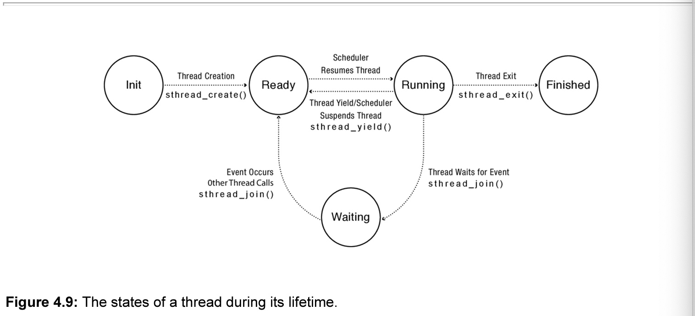
INIT: Thread creation puts a thread into its INIT state and allocates and initializes per-thread data structures. Once that is done, thread creation code puts the thread into the READY state by adding the thread to the ready list. The ready list is the set of runnable threads that are waiting their turn to use a processor. In practice, as discussed in Chapter 7, the ready list is not in fact a “list”; the operating system typically uses a more sophisticated data structure to keep track of runnable threads, such as a priority queue. Nevertheless, following convention, we will continue to refer to it as the ready list.
READY: A thread in the READY state is available to be run but is not currently running. Its TCB is on the ready list, and the values of its registers are stored in its TCB. At any time, the scheduler can cause a thread to transition from READY to RUNNING by copying its register values from its TCB to a processor’s registers.
RUNNING: A thread in the RUNNING state is running on a processor. At this time, its register values are stored on the processor rather than in the TCB. A RUNNING thread can transition to the READY state in two ways: The scheduler can preempt a running thread and move it to the READY state by: (1) saving the thread’s registers to its TCB and (2) switching the processor to run the next thread on the ready list. OR A running thread can voluntarily relinquish the processor and go from RUNNING to READY by calling yield (e.g., thread_yield in the thread library). Notice that a thread can transition from READY to RUNNING and back many times. Since the operating system saves and restores the thread’s registers exactly, only the speed of the thread’s execution is affected by these transitions.
WAITING: A thread in the WAITING state is waiting for some event. Whereas the scheduler can move a thread in the READY state to the RUNNING state, a thread in the WAITING state cannot run until some action by another thread moves it from WAITING to READY. While a thread waits for an event, it cannot make progress; therefore, it is not useful to run it. Rather than continuing to run the thread or storing the TCB on the scheduler’s ready list, the TCB is stored on the waiting list of some synchronization variable associated with the event. When the required event occurs, the operating system moves the TCB from the synchronization variable’s waiting list to the scheduler’s ready list, transitioning the thread from WAITING to READY.
FINISHED: A thread in the FINISHED state never runs again. The system can free some or all of its state for other uses, though it may keep some remnants of the thread in the FINISHED state for a time by putting the TCB on a finished list. For example, the thread_exit call lets a thread pass its exit value to its parent thread via thread_join. Eventually, when a thread’s state is no longer needed (e.g., after its exit value has been read by the join call), the system can delete and reclaim the thread’s state.
Kernel Threads:
 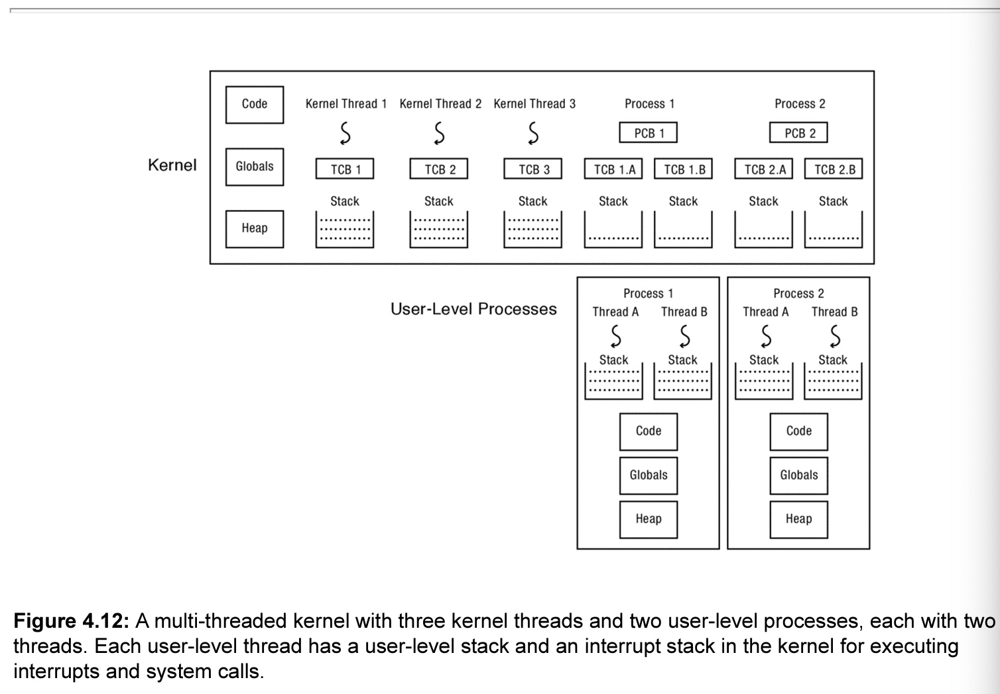
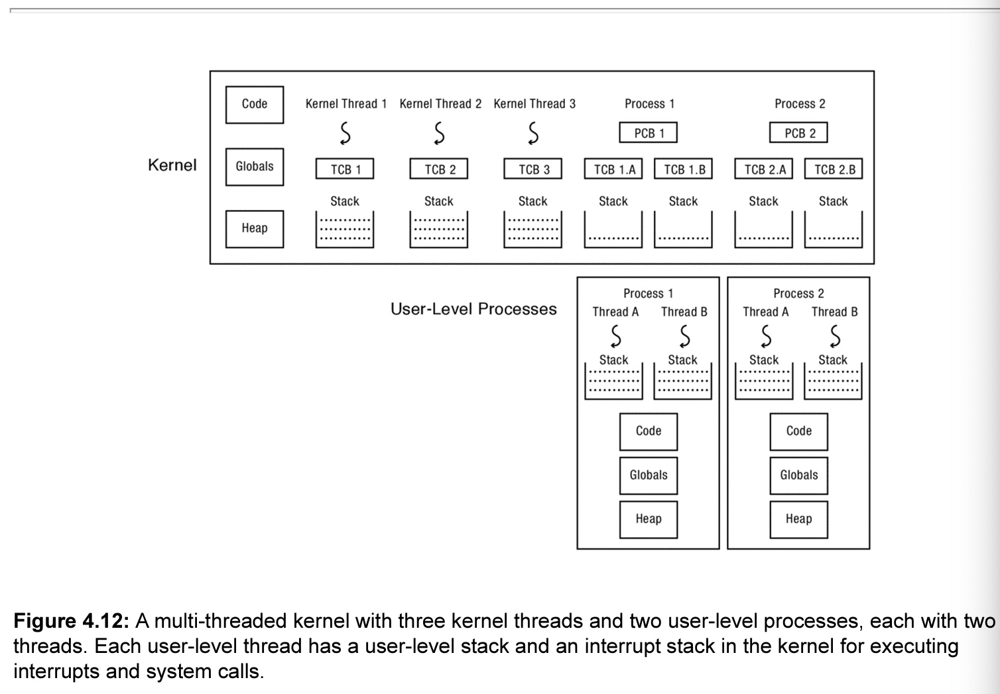
Kernel threads. The simplest case is implementing threads inside the operating system kernel, sharing one or more physical processors. A kernel thread executes kernel code and modifies kernel data structures. Almost all commercial operating systems today support kernel threads.
Kernel threads and single-threaded processes. An operating system with kernel threads might also run some single-threaded user processes. As shown in Figure these processes can invoke system calls that run concurrently with kernel threads inside the kernel.
Multi-threaded processes using kernel threads. Most operating systems provide a set of library routines and system calls to allow applications to use multiple threads within a single user-level process. Figure 4.12 illustrates this case. These threads execute user code and access user-level data structures. They also make system calls into the operating system kernel. For that, they need a kernel interrupt stack just like a normal single-threaded process.
User-level threads. To avoid having to make a system call for every thread operation, some systems support a model where user-level thread operations — create, yield, join, exit, and the synchronization routines described in Chapter 5 — are implemented entirely in a user-level library, without invoking the kernel.
Creating a Thread:
Allocate per-thread state. The first step in the thread constructor is to allocate space for the thread’s per-thread state: the TCB and stack. As we have mentioned, the TCB is the data structure the thread system uses to manage the thread. The stack is an area of memory for storing data about in-progress procedures; it is allocated in memory like any other data structure.
Initialize per-thread state. To initialize the TCB, the thread constructor sets the new thread’s registers to what they need to be when the thread starts RUNNING. When the thread is assigned a processor, we want it to start running func(arg). However, instead of having the thread start in func, the constructor starts the thread in a dummy function, stub, which in turn calls func. We need this extra step in case the func procedure returns instead of calling thread_exit. Without the stub, func would return to whatever random location is stored at the top of the stack! Instead, func returns to stub and stub calls thread_exit to finish the thread.
Put TCB on ready list. The last step in creating a thread is to set its state to READY and put the new TCB on the ready list, enabling the thread to be scheduled.
When a thread calls thread_exit, there are two steps to deleting the thread: Remove the thread from the ready list so that it will never run again. AND Free the per-thread state allocated for the thread.
a thread never deletes its own state. Instead, some other thread must do it. On exit, the thread transitions to the FINISHED state, moves its TCB from the ready list to a list of finished threads the scheduler should never run. The thread can then safely switch to the next thread on the ready list. Once the finished thread is no longer running, it is safe for some other thread to free the state of the thread.
To support multiple threads, we also need a mechanism to switch which threads are RUNNING and which are READY.
A thread context switch suspends execution of a currently running thread and resumes execution of some other thread. The switch saves the currently running thread’s registers to the thread’s TCB and stack, and then it restores the new thread’s registers from that thread’s TCB and stack into the processor.
What Triggers a Kernel Thread Context Switch? A thread context switch can be triggered by either a voluntary call into the thread library, or an involuntary interrupt or processor exception.
Voluntary. The thread could call a thread library function that triggers a context switch. For example, most thread libraries provide a thread_yield call that lets the currently running thread voluntarily give up the processor to the next thread on the ready list. Similarly, the thread_join and thread_exit calls suspend execution of the current thread and start running a different one.
Involuntary. An interrupt or processor exception could invoke an interrupt handler. The interrupt hardware saves the state of the running thread and executes the handler’s code. The handler can decide that some other thread should run, and then switch to it. Alternatively, if the current thread should continue running, the handler restores the state of the interrupted thread and resumes execution.
Voluntary Kernel Thread Context Switch. The pseudo-code for thread_yield first turns off interrupts to prevent the thread system from attempting to make two context switches at the same time. The pseudo-code then pulls the next thread to run off the ready list (if any), and switches to it. The thread_switch code may seem tricky, since it is called in the context of the old thread and finishes in the context of the new thread. To make this work, thread_switch saves the state of the registers to the stack and saves the stack pointer to the TCB. It then switches to the stack of the new thread, restores the new thread’s state from the new thread’s stack, and returns to whatever program counter is stored on the new stack. A twist is that the return location may not be to thread_yield! The return is to whatever the new thread was doing beforehand. For example, the new thread might have been WAITING in thread_join and is now READY to run. The thread might have called thread_yield. Or it might be a newly created thread just starting to run. It is essential that any routine that causes the thread to yield or block call thread_switch in the same way. Equally, to create a new thread, thread_create must set up the stack of the new thread to be as if it had suspended execution just before performing its first instruction.Then, if the newly created thread is the next thread to run, a thread can call thread_yield, switch to the newly created thread, switch to its stack pointer, pop the register values off the stack, and “return” to the new thread, even though it had never called switch in the first place
Involuntary Kernel Thread Context Switch. Chapter 2 explained what happens when an interrupt, exception, or trap interrupts a running user-level process: hardware and software work together to save the state of the interrupted process, run the kernel’s handler, and restore the state of the interrupted process. Save the state. Save the currently running thread’s registers so that the handler can run code without disrupting the interrupted thread. Hardware saves some state when the interrupt or exception occurs, and software saves the rest of the state when the handler runs. Run the kernel’s handler. Run the kernel’s handler code to handle the interrupt or exception. Since we are already in kernel mode, we do not need to change from user to kernel mode in this step. We also do not need to change the stack pointer to the base of the kernel’s interrupt stack. Instead, we can just push saved state or handler variables onto the current stack, starting from the current stack pointer. Restore the state. Restore the next ready thread’s registers so that the thread can resume running where it left off. In short, comparing a switch between kernel threads to what happens on a user-mode transfer: (1) there is no need to switch modes (and therefore no need to switch stacks) and (2) the handler can resume any thread on the ready list rather than always resuming the thread or process that was just suspended.
Combining Kernel Threads and Single-Threaded User Processes:
Hybrid Thread Join. Thread libraries can avoid transitioning to the kernel in certain cases. For example, rather than always making a system call for thread_join to wait for the target thread to finish, thread_exit can store its exit value in a data structure in the process’s address space. Then, if the call to thread_join happens after the targeted thread has exited, it can immediately return the value without having to make a system call. However, if the call to thread_join precedes the call to thread_exit, then a system call is needed to transition to the WAITING state and let some other thread run. As a further optimization, on a multiprocessor it can sometimes make sense for thread_join to spin for a few microseconds before entering the kernel, in the hope that the other thread will finish in the meantime.
Per-Processor Kernel Threads. It is possible to adapt the green threads approach to work on a multiprocessor. For many parallel scientific applications, the cost of creating and synchronizing threads is paramount, and so an approach that requires a kernel call for most thread operations would be prohibitive. Instead, the library multiplexes user-level threads on top of kernel threads, in exactly the same way that the kernel multiplexes kernel threads on top of physical processors. When the application starts up, the user-level thread library creates one kernel thread for each processor on the host machine. As long as there is no other activity on the system, the kernel will assign each of these threads a processor. Each kernel thread executes the user-level scheduler in parallel: pull the next thread off the user-level ready list, and run it. Because thread scheduling decisions occur at user level, they can be flexible and application-specific; for example, in a parallel graph algorithm, the programmer might adjust the priority of various threads based on the results of the computation on other parts of the graph. Of course, most of the downsides of green threads are still present in these systems: Any time a user-level thread calls into the kernel, its host kernel thread blocks. This prevents the thread library from running a different user-level thread on that processor in the meantime. Any time the kernel time-slices a kernel thread, the user-level thread it was running is also suspended. The library cannot resume that thread until the kernel thread resumes. Scheduler Activations. To address these issues, some operating systems have added explicit support for user-level threads. One such model, implemented most recently in Windows, is called scheduler activations. In this approach, the user-level thread scheduler is notified (or activated) for every kernel event that might affect the user-level thread system. For example, if one thread blocks in a system call, the activation informs the userlevel scheduler that it should choose another thread to run on that processor. Scheduler activations are like upcalls or signals, except that they do not return to the kernel; instead, they directly perform user-level thread suspend and resume.
Alternative Abstractions:
Asynchronous I/O and event-driven programming. Asynchronous I/O and events allow a single-threaded program to cope with high-latency I/O devices by overlapping I/O with processing and other I/O.
Asynchronous I/O is a way to allow a single-threaded process to issue multiple concurrent I/O requests at the same time. The process makes a system call to issue an I/O request but the call returns immediately, without waiting for the result. At a later time, the operating system provides the result to the process by either: (1) calling a signal handler, (2) placing the result in a queue in the process’s memory, or (3) storing the result in kernel memory until the process makes another system call to retrieve it.
Data parallel programming. With data parallel programming, all processors perform the same instructions in parallel on different parts of a data set.
One popular model is data parallel programming, also known as SIMD (single instruction multiple data) programming or bulk synchronous parallel programming. In this model, the programmer describes a computation to apply in parallel across an entire data set at the same time, operating on independent data elements. The work on every data item must complete before moving onto the next step; one processor can use the results of a different processor only in some later step. As a result, the behavior of the program is deterministic. Rather than having programmers divide work among threads, the runtime system decides how to map the parallel work across the hardware’s processors.
>